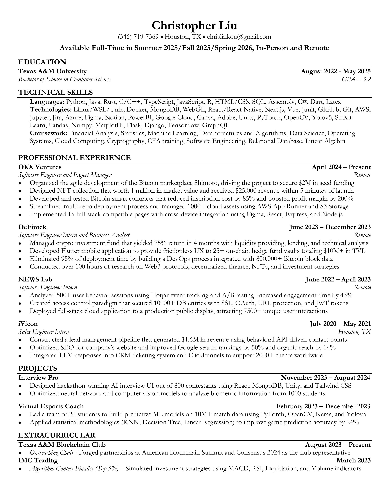

PDF Link
Technical Skills
Here's a brief overview of my technical skill set and what I've
accomplished with each:
-
Full-Stack Development: Experience in
building and deploying web applications using technologies
like React, Node.js, and MongoDB. Developed a web app for
Natoinal Taiwan University, Mainstay Digital, iVicon,
DeFintek, and multiple projects
-
Machine Learning: Hands-on experience with ML
algorithms for predictive analysis. Completed courses on data
science & prediction using Python and scikit-learn.
-
Human-Computer Interaction: Studied user
interface design principles and conducted usability testing
for public websites, enhancing user experience by simplifying
navigation flows. Recently I am also learning Unity, a
powerful 3D application engine.
Areas of Interest in Computer Science
My passion for Computer Science is driven by the following
areas:
-
Artificial Intelligence: Fascinated by the
potential of AI to revolutionize industries and improve
everyday life. Particularly interested in natural language
processing and its applications in creating smarter chatbots
and virtual assistants.
-
Cloud Computing: Interested in cloud
infrastructure and its role in scaling applications
efficiently. Keen on learning more about AWS and Azure.
-
Cryptocurrencies and NFTs: The rise of
cryptocurrencies and NFTs (Non-Fungible Tokens) has opened new
avenues in digital ownership and investment. I am keen on
exploring how these digital assets continue to evolve and
impact the global economy.
-
Blockchain for Social Good: Beyond its
commercial applications, I am interested in how blockchain can
address social and environmental challenges, such as by
enhancing transparency in charitable donations or by
facilitating fair trade practices.
My name is Christopher Liu, and I'm presently immersed in the
challenging and rewarding world of Computer Science as a student at
Texas A&M University. My academic and project experiences span across
a diverse range of disciplines within technology, including full-stack
development, machine learning, and human-computer interaction. This
broad exposure has not only honed my technical skills but also
nurtured a deep understanding of the intricate ways in which users
interact with technology, driving my passion for creating intuitive
and impactful digital experiences. As I navigate through my academic
journey, I am eagerly seeking opportunities to apply my skills in a
practical setting through a Software Engineering (SWE) internship in
the summer of 2024. I bring to the table a robust set of capabilities
as an experienced programmer, underscored by my ability to rapidly
assimilate new information and technologies. My background in
full-stack development equips me with a comprehensive understanding of
software development life cycles, from conceptualization to
deployment, ensuring I can contribute effectively to projects right
from the start. Moreover, my experiences in machine learning projects
have provided me with a solid foundation in data analysis and
algorithm development, enabling me to tackle complex problems with
innovative solutions. My keen interest in human-computer interaction
drives my approach to development, always with a focus on user-centric
design principles. I pride myself on being a fast learner and an
effective communicator, skills that I believe are crucial for success
in fast-paced and collaborative environments. My goal is to leverage
these skills in a challenging internship role, where I can contribute
to impactful projects while continuing to grow professionally and
technically. I am excited about the possibility of sharing more about
my journey and exploring how my background, skills, and interests
align with potential opportunities.